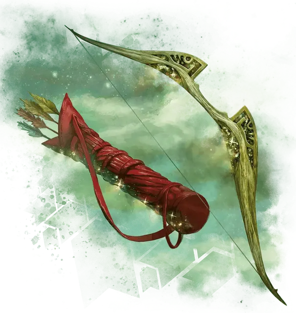

Эфиксида, лук Нилеи
Ephixis, Bow of Nylea
Оружие (короткий лук), артефакт (требуется настройка)

Нилея владеет коротким луком Эфиксидой, чьи стрелы предвещают смену времен года. Нилея легко позволяет своим избранным последователям одалживать её лук, особенно когда они намереваются использовать его для свершения великих дел, положить конец отвратительным существам или низвергнуть гордецов.
Лук природы. Это божественное оружие представляет из себя короткий лук и колчан с четырьмя стрелами, каждая из которых привязана к одному из четырех времен года. Вы получаете бонус +3 к броскам атаки и урона, совершённым этим луком, и не получаете помеху при атаке на максимальной дистанции оружия. Кроме того, Эфиксис совершает критическое попадание при выпадении «19» или «20» на кости атаки.
Благословение природы. Если вы поклоняетесь Нилее, то вы получаете все следующие преимущества, для которых у вас есть необходимое значение благоволения:
Благоволение 10+. Лук получает 1 случайно определяемое малое положительное свойство.
Благоволение 25+. Лук получает 1 случайно определяемое основное положительное свойство.
Если вы не поклоняетесь Нилее, лук получает 1 случайно определяемое основное отрицательное свойство.
Стрелы времён года. Четыре стрелы, каждая из которых связана с временем года, идут в комплекте с этим луком и могут быть выпущены только из него. Каждая стрела исчезает сразу же после использования, и она снова появляется в колчане на следующем закате. Сл спасброска против заклинаний, накладываемых стрелами равна 18. Каждая стрела обладает уникальным свойством:
Весна. Действием, вы можете выстрелить этой стрелой, нацелившись на зверя или растение, которое вы видите в пределах 320 футов от вас. При попадании стрела не наносит никакого урона, и цель на 8 часов получает преимущества заклинания пробуждение разума [awaken].
Лето. Действием, вы можете выстрелить эту стрелу в свободное пространство на земле, которое вы можете видеть в пределах 320 футов от вас, без броска атаки. В это пространство призывается нюкторождённая рысь [nyxborn lynx]. Рысь понимает ваши устные команды и исполняет их, как может, и её ход начинается сразу же после вашего. Рысь существует в течение 1 часа, после чего исчезает.
Осень. Действием, вы можете выстрелить этой стрелой в пространство на земле, которое вы можете видеть в пределах 320 футов от вас, без броска атаки, накладывая в данном пространстве заклинание терновая стена [wall of thorns].
Зима. Действием, вы можете выстрелить этой стрелой в пространство на земле, которое вы можете видеть в пределах 320 футов от вас, без броска атаки, накладывая в данном пространстве заклинание град [ice storm].
Уничтожение лука. Лук нельзя уничтожить, не уничтожив сначала все его стрелы. Зимняя стрела должна быть скормлена Церберу в день зимнего солнцестояния. Весенняя стрела должна быть воткнута в основания Чёрного Дуба Асфодели в день весеннего равноденствия. Летнюю стрелу должен сломать морской гигант в день летнего солнцестояния. Осенняя стрела должна быть выпущена в труп гидры [hydra] в день осеннего равноденствия. После того как все четыре стрелы уничтожены, лук и колчан обращаются в пыль.